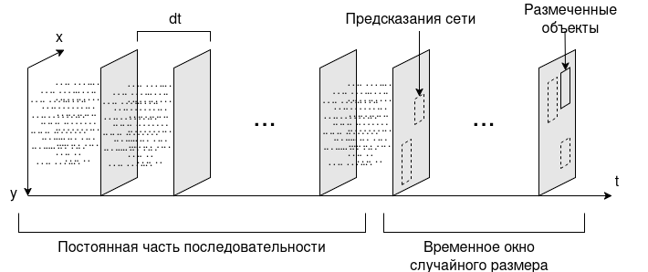

Структура проекта#
Проект разделен на четыре модуля:
|
Содержит класс тренера и интерфейсы для модуля данных и моделей |
Содержит генератор моделей, реализованные модули и конфигурации моделей |
|
|
Содержит сценарии запуска |
Содержит дополнительные инструменты для обработки датасетов, расчетов, вывода и оценки сети |
Сценарии запуска#
Для запуска сценария используется скрипт main.py: python3 main.py. Выбор сценария,
изменение размера пачки и настройка других параметров обучения осуществляется в файле конфигурации.
Класс ModelLoader используется для чтения файла конфигурации и конструирования объектов.
Доступны следующие сценарии:
Сценарий для оценки качества работы сети. Для оценки используется класс |
|
Сценарий интерактивного обучения. Выводит график обучения, позволяет в любой момент приостановить обучение и посмотреть текущие результаты. |
|
|
Сценарий фонового обучения. Не создает окон, автоматически сохраняет веса после каждого
раунда обучения и сохраняет график ошибки во время завершения. Рекомендуется запускать в tmux или другом мультиплексоре:
|
Обработка наборов данных#
Запись, сделанная на событийною камеру, представляет собой массив событий вида \((t, p, x, y)\), где t - время события с начала записи в микросекундах, p - позитивное событие (увеличение яркости) или отрицательное, (x, y) - координаты пикселя. Ввиду того что матрица событийной камеры асинхронна, между двумя соседними событиями имеется временной промежуток случайного размера с разрешением в одну микросекунду. Для обработки этих данных нейросетью они предварительно упаковываются в последовательность кадров. Каждый кадр представлен в виде двухканального изображения, где первый канал содержит положительные события, а второй отрицательные. Если за время между соседними кадрами происходит событие, то в соответствующий пиксель следующего кадра устанавливается единица. От выбранного временного интервала между кадрами зависит плотность событий на изображении.
Инструменты для обработки наборов данных находятся в модуле datasets. Для обучения сети используется модуль данных STProphesee (Single-target Prophesee), который формирует данные таким образом, чтобы последнему кадру всегда соответствовала разметка. Помимо этого чтобы сеть могла обучиться обработке потокового видео размер последовательности каждую итерацию случайно меняется в рамках указанного временного окна.
Также реализован модуль MTProphesee (Multi-target Prophesee), который просто берет из из набора данных отрывки указанного размера и может возвращать разметку для более чем одного кадра.
Структура модели#
Код для генерации модели представлен в модуле models. SODa это базовый класс детектора. В нём реализует функции для расчета функции потерь, обучения сети и генерации прогнозов. При этом сама модель сети генерируется отдельно в ModelLoader и передается в SODa с параметрами при инициализации. Подробнее про генератор моделей смотри в Генерация моделей.